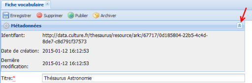
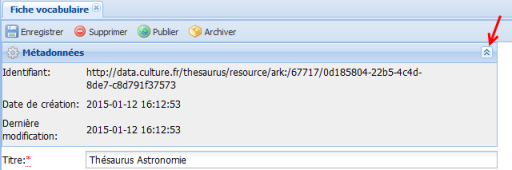

Création d'un vocabulaire
ProcédureCréer un vocabulaire⚓
Depuis le cadre
Gestion, en haut de l'application, cliquez sur le menuNouveau / Vocabulaire.La
Fiche vocabulairedu nouveau vocabulaire s'affiche dans la zone de travail.Elle permet de saisir les métadonnées descriptives du vocabulaire et de déclarer certaines propriétés du vocabulaire (langues utilisables, mono- ou polyhiérarchie) ou ses modalités de construction (Termes de tête par défaut ou pas).
Complétez les métadonnées de la
Fiche vocabulaire.ComplémentEn savoir plus...⚓
Pour en savoir plus sur l'édition du
Vocabulaire: Édition d'un vocabulaireCliquez sur

Enregistrerpour sauvegarder vos modifications.AttentionImportant⚓
Vous devez compléter les champs obligatoires (suivis d'un astérisque rouge) avant de pouvoir sauvegarder votre nouveau vocabulaire.
Le vocabulaire est créé ; il apparaît dans l'explorateur de vocabulaires, classé dans l'ordre alphabétique des titres de vocabulaires.
RemarqueArborescence des concepts⚓
L'arborescence des concepts du nouveau vocabulaire est automatiquement créée et visible dans l'explorateur de vocabulaires mais elle est vide puisqu'aucun
Conceptn'a encore été créé.Pour savoir comment ajouter des
Concepts: ConceptsRemarqueMétadonnées du
Vocabulaire⚓Certaines métadonnées sont automatiquement attribuées au vocabulaire lors de l'enregistrement :
Identifiant,
Date de création,
Dernière modification.
Elles sont visibles au clic sur le bouton
 :
: